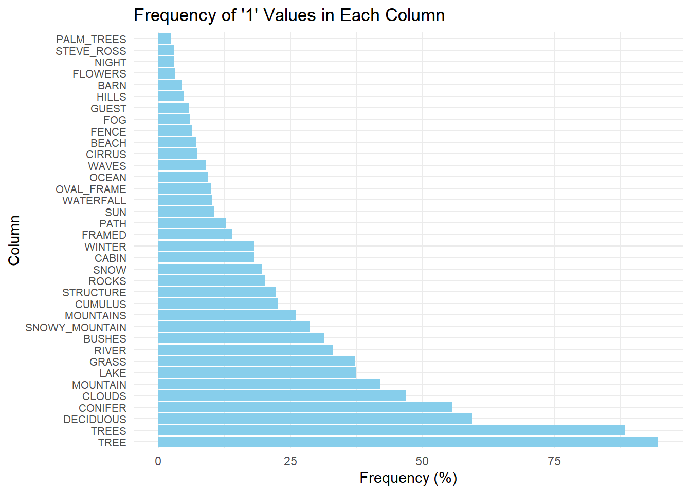
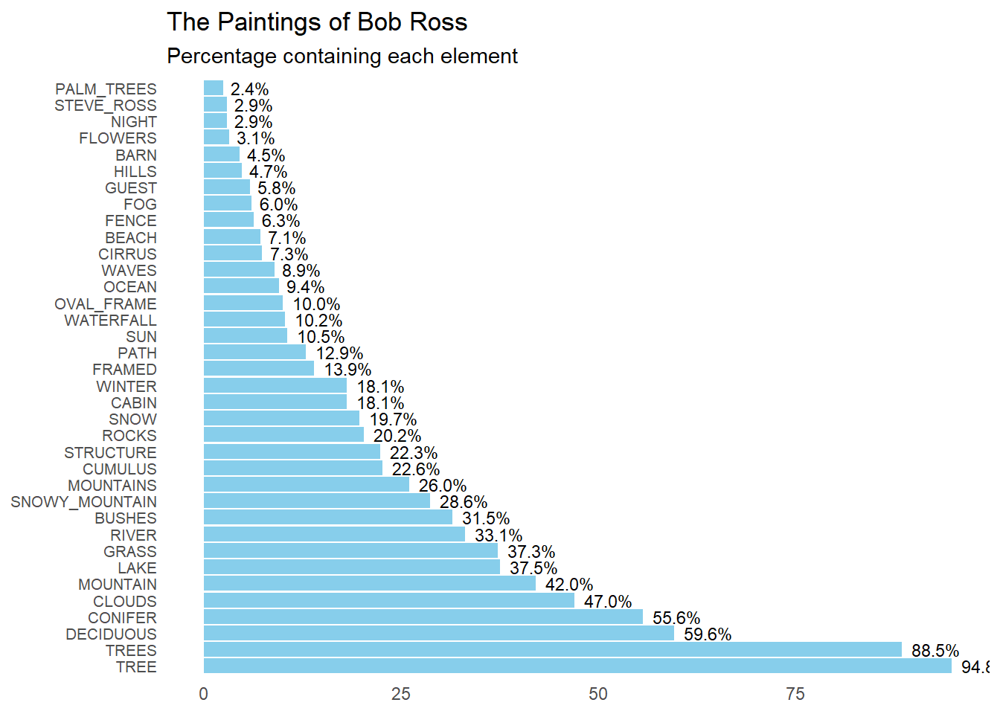
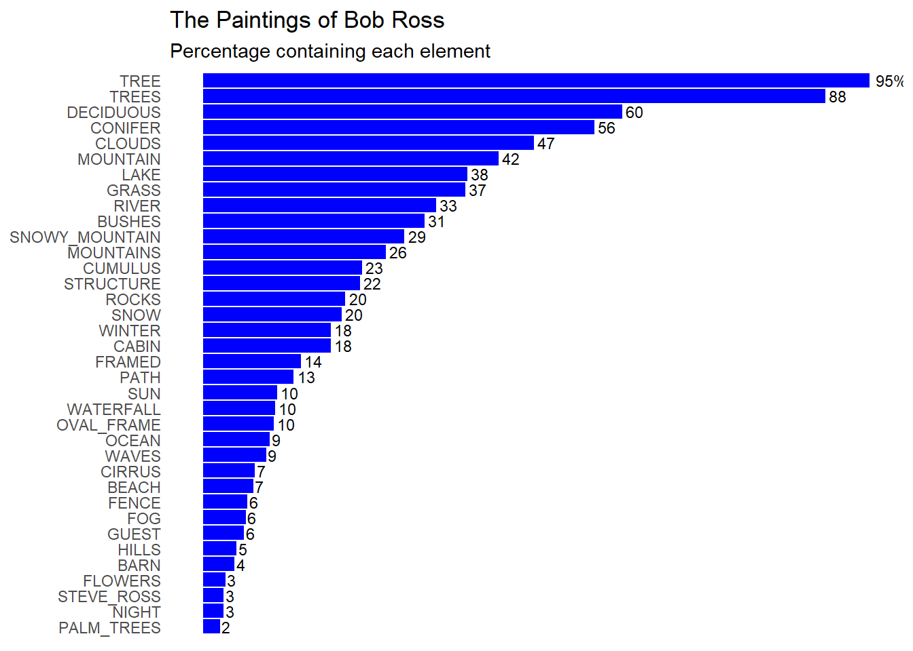
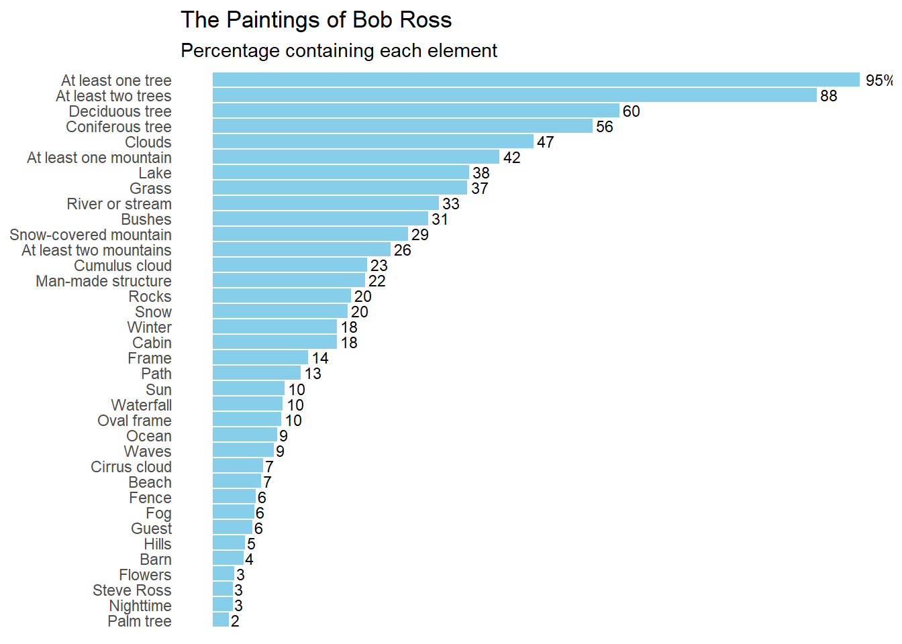
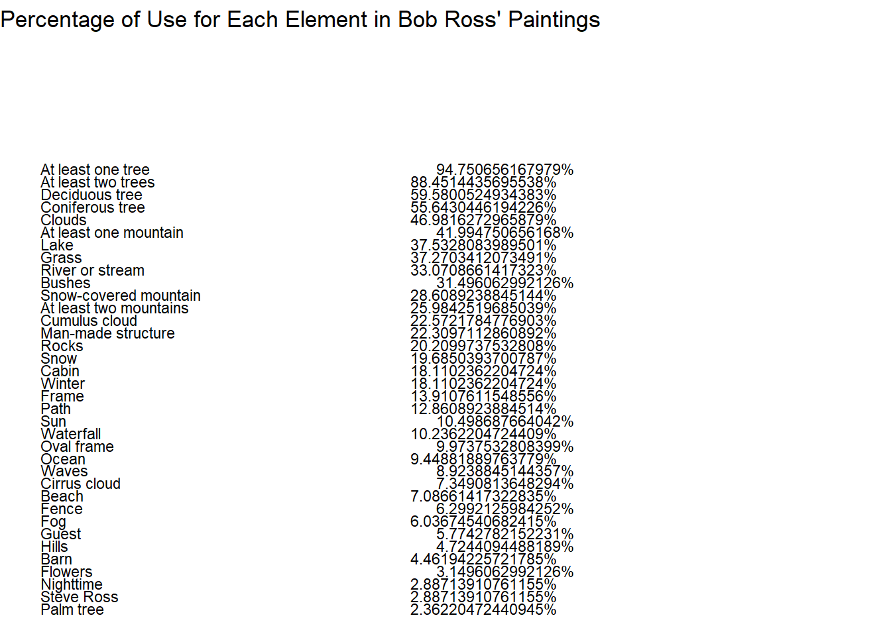

Figure from FiveThirtyEight’s “A Statistical Analysis of the Work of Bob Ross”
Background
For this project, I will be reproducing the figure from the article “A Statistical Analysis of the Work of Bob Ross”. This is a bar graph that displays the percentage of paintings Bob Ross created that contain specific elements, such as trees, clouds, grass, mountains, etc. The 381 paintings that he produced during his show “The Joy of Painting” each contain a combination of these elements and themes. The presence of each element was quantified for each episode (or painting) by measuring the presence (1) or absence (0) of that element. The original figure produced from this data is shown below:
Figure 1. Percentage of inclusion of elements within the paintings of Bob Ross, by Walt Hickey
The link to the source article: https://fivethirtyeight.com/features/a-statistical-analysis-of-the-work-of-bob-ross/
I began by downloading the csv file from FiveThirtyEight’s GitHub repository entitled “bob ross”. The csv file contains the data for each episode/ painting (rows) and element (columns) featured in that episode.
Setting Up
I will begin the reproduction of this figure by opening the libraries that I will need for this project.
library(tidyverse)
── Attaching core tidyverse packages ──────────────────────── tidyverse 2.0.0 ──
✔ dplyr 1.1.4 ✔ readr 2.1.4
✔ forcats 1.0.0 ✔ stringr 1.5.1
✔ ggplot2 3.4.4 ✔ tibble 3.2.1
✔ lubridate 1.9.3 ✔ tidyr 1.3.0
✔ purrr 1.0.2
── Conflicts ────────────────────────────────────────── tidyverse_conflicts() ──
✖ dplyr::filter() masks stats::filter()
✖ dplyr::lag() masks stats::lag()
ℹ Use the conflicted package (<http://conflicted.r-lib.org/>) to force all conflicts to become errors
library(ggplot2)library(here)
here() starts at C:/Users/rrsta/OneDrive/Desktop/MADAcourseexercises/MADAcourserepo
Attaching package: 'kableExtra'
The following object is masked from 'package:dplyr':
group_rows
I will now read the csv file and create a new data frame in R. Next, I will examine the structure of this data and
bobross <- readr::read_csv( # Use readr to extract the csv to a dataframe called bobrosshere("presentation-exercise/elements-by-episode.csv"), # Use here to create a relative path in my directorycol_types =list(.default =col_double(), # Define all columns unspecified to be a double (1 or 0)EPISODE =col_character(),TITLE =col_character()# Define column 1 to contain a character variable (episode) ))str(bobross)
I did troubleshooting using ChatGPT to find out how to add a different column type for the first two character columns. Normally, I would use the default option for all columns, but instead, I was told to add a line with the specific column name and type of variable that the column contains. I fixed this by adding col_types for TITLE and EPISODE. The data frame was successfully extracted into R.
Reproducing a Bar Graph
Now, I will attempt to reproduce the graph in the article by using ChatGPT and ggplot functions to make a professional-looking bar chart.
Looking at the bar graph, it seems that the author renamed many of the columns to better reflect what they represent. I will infer which names correspond to which bar chart subtitles. The author only includes the top 36 of the total possible 67 elements.
I began with the prompt: >“I want to produce a horizontal bar chart using R ggplot. The columns include a binary value of”0” or “1”. I want to plot the frequency of “1” values for each column. I want to convert this frequency into a percentage out of 381. I want to plot only the 36 greatest percentages.”
# Calculate the frequency of "1" values for each column and convert it to percentagefreq_br <- bobross %>%summarise_all(~sum(. ==1) /381*100) %>%# Convert the frequency of 1 to a percentage for eahc columngather() %>%arrange(desc(value)) %>%head(36) # Choose the highest 36 frequencies# Plotting the horizontal bar chartggplot(freq_br, aes(x =reorder(key, -value), y = value)) +geom_bar(stat ="identity", fill ="skyblue") +coord_flip() +labs(x ="Column", y ="Frequency (%)", title ="Frequency of '1' Values in Each Column") +theme_minimal() +theme(axis.text.y =element_text(size =8)) # Adjust font size of y-axis labels if needed

This is a solid start, however, I will add prompts to reformat the graph in a way that mimics the original. To do this I used the prompt: >“Make the plot descending in value. Label the percentage value at the end of each bar. Delete the axis titles. Remove the grid lines. Change the graph title to”The Paintings of Bob Ross” with the subtitle “Percentage containing each element”.”
# Plotting the horizontal bar chartggplot(freq_br, aes(x =reorder(key, -value), y = value, label =sprintf("%.1f%%", value))) +geom_bar(stat ="identity", fill ="skyblue") +geom_text(hjust =-0.2, size =3) +# Add text labels at the end of barscoord_flip() +labs(title ="The Paintings of Bob Ross",subtitle ="Percentage containing each element",x =NULL, y =NULL) +# Remove axis titlestheme_minimal() +theme(axis.text.y =element_text(size =8), # Adjust font size of y-axis labelspanel.grid =element_blank()) # Remove grid lines

Because it did not make the plot descending, I will ask ChatGPT to flip the plot along the x-axis. I will also ask it to remove the y-axis labels. >“Flip the plot to make the largest percentage value at the top. Remove the % sign, except for the highest percentage value. Remove the frequency labels on the axis. Change the color to blue.”
# Plotting the horizontal bar chartggplot(freq_br, aes(x =reorder(key, value), y = value, label =ifelse(rank(desc(value)) ==1, paste0(round(value), "%"), round(value)))) +geom_bar(stat ="identity", fill ="blue") +geom_text(hjust =-0.2, size =3) +# Add text labels at the end of barscoord_flip() +labs(title ="The Paintings of Bob Ross",subtitle ="Percentage containing each element",x =NULL, y =NULL) +# Remove axis titlestheme_minimal() +theme(axis.text.x =element_blank(), # Remove y-axis labelsaxis.ticks.y =element_blank(), # Remove y-axis tickspanel.grid =element_blank()) # Remove grid lines

I now want to change the y-axis names to coordinate with the names used in the paper. I also uploaded the original figure into the AI font finder, called WhatTheFont, to identify the font used. It was called “Elastik Regular D”.
I started with the prompt: >“Change the font to”Elastik Regular D”. How do I change the y-axis subtitles to custom titles?”
This was not what I wanted, as I wanted to change the name of the column labels on the plot. Instead I used this prompt: >“Remove this y-axis title. I want to change the column names used to label each frequency bar”
This resulted in the same problem as before, so I asked ChatGPT “How do I rename the values in the ‘Key’ column?” and it suggested to use the mutate() function from the dpylr package. I change the names for each key item below.
freq_br <- freq_br %>%mutate(key =case_when( key =="TREE"~"At least one tree",key =="TREES"~"At least two trees",key =="DECIDUOUS"~"Deciduous tree",key =="CONIFER"~"Coniferous tree",key =="CLOUDS"~"Clouds",key =="MOUNTAIN"~"At least one mountain",key =="LAKE"~"Lake",key =="GRASS"~"Grass",key =="RIVER"~"River or stream",key =="BUSHES"~"Bushes",key =="SNOWY_MOUNTAIN"~"Snow-covered mountain",key =="MOUNTAINS"~"At least two mountains",key =="CUMULUS"~"Cumulus cloud",key =="STRUCTURE"~"Man-made structure",key =="ROCKS"~"Rocks",key =="SNOW"~"Snow",key =="WINTER"~"Winter",key =="CABIN"~"Cabin",key =="FRAMED"~"Frame",key =="PATH"~"Path",key =="SUN"~"Sun",key =="WATERFALL"~"Waterfall",key =="OVAL_FRAME"~"Oval frame",key =="OCEAN"~"Ocean",key =="WAVES"~"Waves",key =="CIRRUS"~"Cirrus cloud",key =="BEACH"~"Beach",key =="FENCE"~"Fence",key =="FOG"~"Fog",key =="GUEST"~"Guest",key =="HILLS"~"Hills",key =="BARN"~"Barn",key =="FLOWERS"~"Flowers",key =="STEVE_ROSS"~"Steve Ross",key =="NIGHT"~"Nighttime",key =="PALM_TREES"~"Palm tree",TRUE~ key # Keep other values unchanged ))
I also noticed that the font called “Elastik Regular D” was not available, so I asked ChatGOT for similar fonts, to which it gave me “Roboto”, amongst others. To use this fotn I had to install the open source font document onto my laptop.
When I subsituted the font “Roboto Regular”, I continued to recieve an error message. Because of this, I sent ChatGPT the error message. I recieved this output. I will refrain from including this code, as it relies on a local path to find the font, rather than the repository. You may change the code after paths to fit your local device.
#Install and load the extrafont package library(extrafont) #Specify the exact font file path for Roboto Regular font_import(paths = “C:/Windows/Fonts”, prompt = FALSE) #Load the Roboto Regular font family loadfonts(device = “win”)
The installation of Roboto Regular into R was not successful, so I will use a similar font that I found in my font database called “Segoe UI”.
The final code for producing the plot is shown below:
# Plotting the horizontal bar chartggplot(freq_br, aes(x =reorder(key, value), y = value, label =ifelse(rank(desc(value)) ==1, paste0(round(value), "%"), round(value)))) +geom_bar(stat ="identity", fill ="skyblue") +geom_text(hjust =-0.2, size =3) +# Add text labels at the end of barscoord_flip() +labs(title ="The Paintings of Bob Ross",subtitle ="Percentage containing each element",x =NULL, y =NULL) +# Remove axis titlestheme_minimal() +theme(axis.text.x =element_blank(), # Remove y-axis labelsaxis.ticks.y =element_blank(), # Remove y-axis tickspanel.grid =element_blank(), # Remove grid linestext =element_text(family ="Segoe UI")) # Change font to Snow
Warning in grid.Call(C_stringMetric, as.graphicsAnnot(x$label)): font family
not found in Windows font database
Warning in grid.Call(C_stringMetric, as.graphicsAnnot(x$label)): font family
not found in Windows font database
Warning in grid.Call(C_stringMetric, as.graphicsAnnot(x$label)): font family
not found in Windows font database
Warning in grid.Call(C_textBounds, as.graphicsAnnot(x$label), x$x, x$y, : font
family not found in Windows font database
Warning in grid.Call(C_textBounds, as.graphicsAnnot(x$label), x$x, x$y, : font
family not found in Windows font database
Warning in grid.Call(C_textBounds, as.graphicsAnnot(x$label), x$x, x$y, : font
family not found in Windows font database
Warning in grid.Call(C_textBounds, as.graphicsAnnot(x$label), x$x, x$y, : font
family not found in Windows font database
Warning in grid.Call(C_textBounds, as.graphicsAnnot(x$label), x$x, x$y, : font
family not found in Windows font database
Warning in grid.Call(C_textBounds, as.graphicsAnnot(x$label), x$x, x$y, : font
family not found in Windows font database
Warning in grid.Call(C_textBounds, as.graphicsAnnot(x$label), x$x, x$y, : font
family not found in Windows font database
Warning in grid.Call(C_textBounds, as.graphicsAnnot(x$label), x$x, x$y, : font
family not found in Windows font database
Warning in grid.Call(C_textBounds, as.graphicsAnnot(x$label), x$x, x$y, : font
family not found in Windows font database

In the final product, I changed the color back to “skyblue” as this color is more appealing. The format of the box plot is similar to the original, except, the percent frequency of each element differs. This might be because the formula for finding the frequency of each element and the conversion into percentages might have differed. However, the author did not include their methodology for finding the percentages displayed in the figure. For this reason, the figure will stay how it is.
Producing a Table
I will now produce a professional-looking table from the data previously used to create the bar graph. I start by giving ChatGPT this prompt:
Create a professional-looking from the data frame called freq_df. Let the values in the key column be labels in the left column of the table. Let the values in the column value be the right column of the table. Let the title of the table be “Percentage of Use for Each Element in Bob Ross’ Paintings”. Let the column labels be bold. Use a skyblue and white pattern for the body of the table.
I originally recieved an error saying that R could not find the function row_spec, so I pasted the error message into ChatGPT. Because I was repeatedly recieving errors from R when using knitr, I decided to ask ChatGPT to produce this table using ggplot instead.
After going back and forth with ChatGPT to correct some of my syntax errors, I came up with this table.
# Create ggplot objectggplot(freq_br, aes(x =1, y =1)) +# Create a plot with single pointgeom_blank() +# Add a blank layer to create a canvasgeom_text(aes(label = key, y =seq(0.9, 0.5, length.out =nrow(freq_br))), hjust =0, lineheight =1.5, size =3) +# Add text for elementsgeom_text(aes(label =paste0(value, "%"), x =2, y =seq(0.9, 0.5, length.out =nrow(freq_br))), hjust =3, lineheight =1.5, size =3) +# Add text for percentagestheme_void() +# Remove axis and backgroundlabs(title ="Percentage of Use for Each Element in Bob Ross' Paintings") # Add title

Even after a long while of bac and forth, I was unable to space the lines and format the table as I preferred. Instead, I asked ChatGPT to produce the table previously requested, but with using knitr instead of ggplot.
knitr::kable(freq_br, caption ="Percentage of Use for Each Element in Bob Ross' Paintings")
Percentage of Use for Each Element in Bob Ross’ Paintings
key
value
At least one tree
94.750656
At least two trees
88.451444
Deciduous tree
59.580053
Coniferous tree
55.643045
Clouds
46.981627
At least one mountain
41.994751
Lake
37.532808
Grass
37.270341
River or stream
33.070866
Bushes
31.496063
Snow-covered mountain
28.608924
At least two mountains
25.984252
Cumulus cloud
22.572178
Man-made structure
22.309711
Rocks
20.209974
Snow
19.685039
Cabin
18.110236
Winter
18.110236
Frame
13.910761
Path
12.860892
Sun
10.498688
Waterfall
10.236220
Oval frame
9.973753
Ocean
9.448819
Waves
8.923884
Cirrus cloud
7.349081
Beach
7.086614
Fence
6.299213
Fog
6.036745
Guest
5.774278
Hills
4.724409
Barn
4.461942
Flowers
3.149606
Nighttime
2.887139
Steve Ross
2.887139
Palm tree
2.362205
I added prompts to ChatGPT to change the colors to alternating skyblue and white and to make the table “professional looking”.
kable(freq_br, caption ="Percentage of Use for Each Element in Bob Ross' Paintings") %>%kable_styling(full_width =FALSE, bootstrap_options =c("striped", "hover"),font_size =16,latex_options ="hold_position",repeat_header_text ="Table 1: Percentage of Use for Each Element in Bob Ross' Paintings") %>%column_spec(1:2, background =c("skyblue", "white"))
Warning in ensure_len_html(background, nrows, "background"): The number of
provided values in background does not equal to the number of rows.
Percentage of Use for Each Element in Bob Ross' Paintings
key
value
At least one tree
94.750656
At least two trees
88.451444
Deciduous tree
59.580053
Coniferous tree
55.643045
Clouds
46.981627
At least one mountain
41.994751
Lake
37.532808
Grass
37.270341
River or stream
33.070866
Bushes
31.496063
Snow-covered mountain
28.608924
At least two mountains
25.984252
Cumulus cloud
22.572178
Man-made structure
22.309711
Rocks
20.209974
Snow
19.685039
Cabin
18.110236
Winter
18.110236
Frame
13.910761
Path
12.860892
Sun
10.498688
Waterfall
10.236220
Oval frame
9.973753
Ocean
9.448819
Waves
8.923884
Cirrus cloud
7.349081
Beach
7.086614
Fence
6.299213
Fog
6.036745
Guest
5.774278
Hills
4.724409
Barn
4.461942
Flowers
3.149606
Nighttime
2.887139
Steve Ross
2.887139
Palm tree
2.362205
After seeing the length of this table, I decided to consolidate it to the top 10 elements. I prompted it to shorten the table by only showing the top 10 elements. This took quite a bit of back and forth, but I finally ended with a smaller table.
# Calculate total frequencytotal_frequency <-sum(freq_br$value)# Sort the data frame by frequency in descending orderfreq_br <- freq_br[order(-freq_br$value), ]# Keep only the top N elementstop_N <-10top_elements <- freq_br[1:top_N, c("key", "value")]# Combine less frequent elements into an "Other" categoryother_elements <-data.frame(key ="Other",value =sum(freq_br$value[-(1:top_N)]))# Ensure that both data frames have consistent column namesnames(other_elements) <-names(top_elements)# Combine top elements and "Other" categorycombined_data <-rbind(top_elements, other_elements)# Create the tablecombined_data %>%kable(caption ="Percentage of Use for Top Elements in Bob Ross' Paintings") %>%kable_styling(full_width =FALSE, bootstrap_options =c("striped", "hover"),font_size =16,latex_options ="hold_position",repeat_header_text ="Table 1: Percentage of Use for Top Elements in Bob Ross' Paintings") %>%column_spec(1:2, background =c("skyblue", "white"))
Warning in ensure_len_html(background, nrows, "background"): The number of
provided values in background does not equal to the number of rows.
Percentage of Use for Top Elements in Bob Ross' Paintings
key
value
At least one tree
94.75066
At least two trees
88.45144
Deciduous tree
59.58005
Coniferous tree
55.64304
Clouds
46.98163
At least one mountain
41.99475
Lake
37.53281
Grass
37.27034
River or stream
33.07087
Bushes
31.49606
Other
304.46194
Lastly, I will round the digits in the values column to two decimal places.
# Calculate total frequencytotal_frequency <-sum(freq_br$value)# Sort the data frame by frequency in descending orderfreq_br <- freq_br[order(-freq_br$value), ]# Keep only the top N elementstop_N <-10top_elements <- freq_br[1:top_N, c("key", "value")]# Round the "Frequency" values to two decimal placestop_elements$value <-round(top_elements$value, 2)# Combine less frequent elements into an "Other" categoryother_elements <-data.frame(key ="Other",value =sum(freq_br$value[-(1:top_N)]))# Round the "Frequency" value to two decimal placesother_elements$value <-round(other_elements$value, 2)# Ensure that both data frames have consistent column namesnames(other_elements) <-names(top_elements)# Combine top elements and "Other" categorycombined_data <-rbind(top_elements, other_elements)# Create the tablecombined_data %>%kable(caption ="Percentage of Use for Top Elements in Bob Ross' Paintings") %>%kable_styling(full_width =FALSE, bootstrap_options =c("striped", "hover"),font_size =16,latex_options ="hold_position",repeat_header_text ="Table 1: Percentage of Use for Top Elements in Bob Ross' Paintings") %>%column_spec(1:2, background =c("skyblue", "white"))
Warning in ensure_len_html(background, nrows, "background"): The number of
provided values in background does not equal to the number of rows.
Percentage of Use for Top Elements in Bob Ross' Paintings